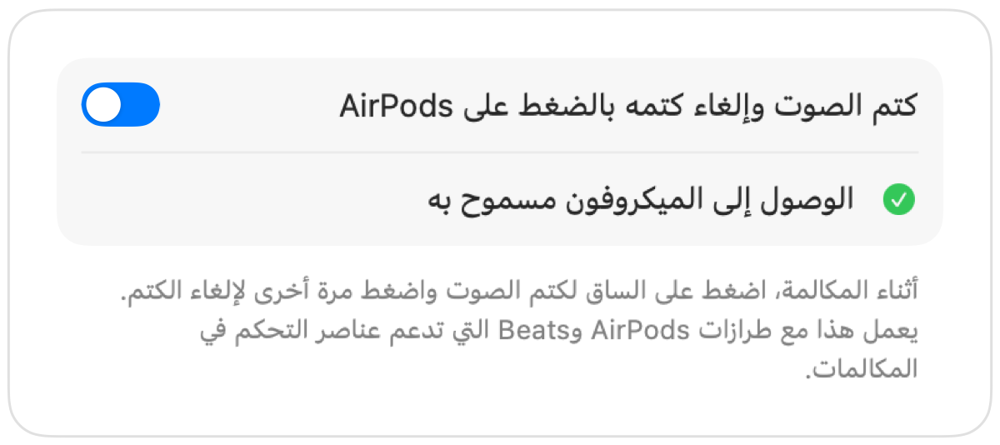

كيفية كتم صوت Google Meet باستخدام AirPods على Mac
في iPhone، يؤدي الضغط على ساق AirPods إلى كتم صوت المكالمة. أما في Mac، يعمل Google Meet داخل متصفح Chrome، ولا يمرر Chrome هذه الضغطة إلى صفحات الويب. تضغط، فتسمع نغمة خطأ، بينما يواصل Meet إرسال صوتك.
يحل Muffle هذه المشكلة في كل مكالمة Meet. فهو يستقبل ضغطة AirPods بنفسه ويكتم ميكروفون Mac، فيصل الصمت إلى Meet حتى لو كانت علامة التبويب في الخلفية.
كتم صوت Google Meet باستخدام AirPods
- 1
ثبّت Muffle واسمح بالوصول إلى الميكروفون عند طلبه.
- 2
انضم إلى مكالمة Google Meet في Chrome أو Safari أو Arc أو Edge.
- 3
اضغط على ساق AirPods مرة واحدة لكتم الصوت. ستتحول أيقونة Muffle إلى اللون الأحمر.
- 4
اضغط مجددًا لإلغاء كتم الصوت. يمكنك أيضًا الضغط على Control-Option-M من أي تطبيق.

- قد يُظهر Meet أن المايك مفعّل لأن Muffle يكتم صوت الميكروفون نفسه لا زر Meet. سيسمع الجميع الصمت طالما أن أيقونة Muffle باللون الأحمر.
- فعّل «بدء كل مكالمة وصوتها مكتوم» للانضمام إلى كل اجتماع في Meet وصوتك مكتوم.
الأسئلة الشائعة
لماذا لا تؤدي الضغطة على AirPods إلى كتم صوت Google Meet؟
لا يدعم Chrome إيماءة كتم الصوت لسماعات AirPods في مكالمات الويب على macOS، لذلك لا يجد macOS تطبيقًا يرسل الضغطة إليه. وهنا يأتي دور Muffle ليكون هذا التطبيق.
ألا يكفي اختصار Meet المدمج؟
يعمل اختصار Command-D الخاص بـ Meet فقط عندما تكون علامة تبويب Meet نشطة في المقدمة. أما اختصار Muffle وضغطة AirPods فيعملان من أي تطبيق.